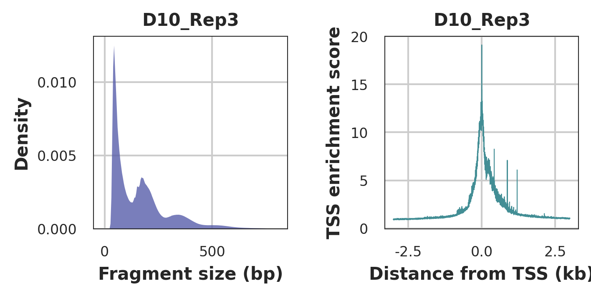

Chapter 3 Snakemake Pipeline
The pipeline code is available here. Please refer to this to configure the appropriate working environment.
3.1 Example Data
Here we will take the ATAC-seq / RNA-seq data from this publication as an example to demonstrate our snakemake process and downstream analysis with cisDynet package.
ATAC-seq and RNA-seq data for several immune cell of the human are included here:
| ID | Cells | ATAC-seq | RNA-seq |
|---|---|---|---|
| 1 | Bulk_B | SRR7650729 | SRR7647654 |
| 2 | Mem_B | SRR7650731 | SRR7647656 |
| 3 | Naive_B | SRR7650733 | SRR7647659 |
| 4 | Plasmablasts | SRR7650735 | SRR7647660 |
| 5 | CD8pos_T | SRR7650736 | SRR11007061 |
| 6 | Central_memory_CD8pos_T | SRR7650738 | SRR11007063 |
| 7 | Effector_memory_CD8pos_T | SRR7650740 | SRR11007065 |
| 8 | Naive_CD8_T | SRR7650742 | SRR11007067 |
| 9 | Gamma_delta_T | SRR7650744 | SRR11007069 |
| 10 | Effector_CD4pos_T | SRR7650745 | SRR11007071 |
| 11 | Follicular_T_Helper | SRR7650747 | SRR11007073 |
| 12 | Memory_Teffs | SRR7650749 | SRR11007075 |
| 13 | Memory_Tregs | SRR7650751 | SRR11007077 |
| 14 | Naive_Teffs | SRR7650753 | SRR11007079 |
| 15 | Regulatory_T | SRR7650755 | SRR11007083 |
| 16 | Th1_precursors | SRR7650757 | SRR11007085 |
| 17 | Immature_NK | SRR7650763 | SRR11007193 |
| 18 | Mature_NK | SRR7650764 | SRR11007090 |
| 19 | Monocytes | SRR7650767 | SRR11007092 |
| 20 | pDCs | SRR7650770 | SRR11007095 |
3.2 Config File
All you need to do is prepare a config.yaml file in the following format.
sample:
Bulk_B:
fwd: /mnt/public3/cat/data/ATAC/fq/SRR7650729_1.fastq.gz
rev: /mnt/public3/cat/data/ATAC/fq/SRR7650729_2.fastq.gz
Mem_B:
fwd: /mnt/public3/cat/data/ATAC/fq/SRR7650731_1.fastq.gz
rev: /mnt/public3/cat/data/ATAC/fq/SRR7650731_2.fastq.gz
Naive_B:
fwd: /mnt/public3/cat/data/ATAC/fq/SRR7650733_1.fastq.gz
rev: /mnt/public3/cat/data/ATAC/fq/SRR7650733_2.fastq.gz
Plasmablasts:
fwd: /mnt/public3/cat/data/ATAC/fq/SRR7650735_1.fastq.gz
rev: /mnt/public3/cat/data/ATAC/fq/SRR7650735_2.fastq.gz
CD8pos_T:
fwd: /mnt/public3/cat/data/ATAC/fq/SRR7650736_1.fastq.gz
rev: /mnt/public3/cat/data/ATAC/fq/SRR7650736_2.fastq.gz
Central_memory_CD8pos_T:
fwd: /mnt/public3/cat/data/ATAC/fq/SRR7650738_1.fastq.gz
rev: /mnt/public3/cat/data/ATAC/fq/SRR7650738_2.fastq.gz
Effector_memory_CD8pos_T:
fwd: /mnt/public3/cat/data/ATAC/fq/SRR7650740_1.fastq.gz
rev: /mnt/public3/cat/data/ATAC/fq/SRR7650740_2.fastq.gz
Naive_CD8_T:
fwd: /mnt/public3/cat/data/ATAC/fq/SRR7650742_1.fastq.gz
rev: /mnt/public3/cat/data/ATAC/fq/SRR7650742_2.fastq.gz
Gamma_delta_T:
fwd: /mnt/public3/cat/data/ATAC/fq/SRR7650744_1.fastq.gz
rev: /mnt/public3/cat/data/ATAC/fq/SRR7650744_2.fastq.gz
Effector_CD4pos_T:
fwd: /mnt/public3/cat/data/ATAC/fq/SRR7650745_1.fastq.gz
rev: /mnt/public3/cat/data/ATAC/fq/SRR7650745_2.fastq.gz
Follicular_T_Helper:
fwd: /mnt/public3/cat/data/ATAC/fq/SRR7650747_1.fastq.gz
rev: /mnt/public3/cat/data/ATAC/fq/SRR7650747_2.fastq.gz
Memory_Teffs:
fwd: /mnt/public3/cat/data/ATAC/fq/SRR7650749_1.fastq.gz
rev: /mnt/public3/cat/data/ATAC/fq/SRR7650749_2.fastq.gz
Memory_Tregs:
fwd: /mnt/public3/cat/data/ATAC/fq/SRR7650751_1.fastq.gz
rev: /mnt/public3/cat/data/ATAC/fq/SRR7650751_2.fastq.gz
Naive_Teffs:
fwd: /mnt/public3/cat/data/ATAC/fq/SRR7650753_1.fastq.gz
rev: /mnt/public3/cat/data/ATAC/fq/SRR7650753_2.fastq.gz
Regulatory_T:
fwd: /mnt/public3/cat/data/ATAC/fq/SRR7650755_1.fastq.gz
rev: /mnt/public3/cat/data/ATAC/fq/SRR7650755_2.fastq.gz
Th1_precursors:
fwd: /mnt/public3/cat/data/ATAC/fq/SRR7650757_1.fastq.gz
rev: /mnt/public3/cat/data/ATAC/fq/SRR7650757_2.fastq.gz
Immature_NK:
fwd: /mnt/public3/cat/data/ATAC/fq/SRR7650763_1.fastq.gz
rev: /mnt/public3/cat/data/ATAC/fq/SRR7650763_2.fastq.gz
Mature_NK:
fwd: /mnt/public3/cat/data/ATAC/fq/SRR7650764_1.fastq.gz
rev: /mnt/public3/cat/data/ATAC/fq/SRR7650764_2.fastq.gz
Monocytes:
fwd: /mnt/public3/cat/data/ATAC/fq/SRR7650767_1.fastq.gz
rev: /mnt/public3/cat/data/ATAC/fq/SRR7650767_2.fastq.gz
pDCs:
fwd: /mnt/public3/cat/data/ATAC/fq/SRR7650770_1.fastq.gz
rev: /mnt/public3/cat/data/ATAC/fq/SRR7650770_2.fastq.gz
## Pipeline working derectory.
workdir: /mnt/public3/cat/data/ATAC/
## BWA indexed genome fasta file.
fasta: /public/workspace/zhutao/pipeline/genome/hg19/bwa_clean_index/hg19_clean.fa
## The gff file.
gff3: /public/workspace/zhutao/pipeline/genome/hg19/gencode.v19.annotation.gff3
## Effective genome size for MACS2 peeak calling.
effect_genome_size: 2864785220
## Motif file with PWM format.
motif: /mnt/public3/cat/data/ATAC/jaspar.moitf.txt
## Sequence_adapters.
adapters: /public/workspace/zhutao/miniconda3/pkgs/trimmomatic-0.39-1/share/trimmomatic-0.39-1/adapters/NexteraPE-PE.fa
## mapping quality tags.
mapping_quality: 30
## Organelle name (For plants, a comma separates mitochondria and chloroplasts)
organell_chr: chrX
## Peak calling.
extsize: 150
shift: 75
## convert bam to bigwig.
smoothLength: 20
binSize: 5
threads: 5
## Remove blacklist from the peaks.
blacklist: NA
overlap_ratio: 0.3 ## Requiring the overlap region being at least xx% of peak as a blacklist.
## The software path.
software:
atacqc: "/mnt/public3/cat/data/ATAC/atacqc"
trimmomatic: "~/miniconda3/bin/trimmomatic"
bwa: "~/miniconda3/bin/bwa"
bedtools: "/bioapps/rhel7/bedtools-2.30.0/bin/bedtools"
samtools: "~/miniconda3/bin/samtools"
macs2: "~/miniconda3/bin/macs2"
bamCoverage: "~/miniconda3/bin/bamCoverage"
fadix: "~/miniconda3/bin/faidx"
multiqc: "~/miniconda3/bin/multiqc"
TOBIAS: "~/miniconda3/envs/tobias/bin/TOBIAS"
3.3 Blacklists
In the context of epigenomic analysis, “blacklisted regions” typically refer to specific areas on the genome that often include repetitive sequences, transposons, genes encoding non-epigenetic modifying enzymes, etc. These regions can potentially interfere with the accuracy and interpretability of epigenomic studies. In mammals, such as humans and mice, the ENCODE programme has obtained specific blacklists by inferring and hand-correcting. This same problem exists in plant epigenomics, but there is no specific blacklist for researchers to use. Here we used the Greenscreen software here, combined with data collected by our ChIP-Hub, to infer genome blacklists for Arabidopsis, rice, maize, tomato, and soybean.
The corresponding blacklists can be downloaded via the links below.
| Plant species | Tax ID | Common name | Genome release version | Genome size (in Mb) | # BAMs used |
|---|---|---|---|---|---|
| Arabidopsis thaliana | 3702 | Mouse-ear cress | TAIR10 | 119.15 | 1533 |
| Oryza sativa | 39947 | Japonica rice | IRGSP-1.0 | 374.47 | 140 |
| Zea mays | 4577 | Maize | AGPv3 | 2066.43 | 154 |
| Solanum lycopersicum | 4081 | Tomato | ITAG2.4 | 823.94 | 28 |
| Glycine max | 3847 | Soybean | Wm82.a2.v1 | 949.18 | 53 |
3.4 Pipeline Output Folders
Important Folders:
trimmed: After removing sequencing adapters and low quality sequences.
signal: The bigwig file normalized by CPM and RPKM methods.
q30: The bam file after removing the low mapping scores and organelle reads.
peaks: The narrowpeak files obtained by MACS2.
multiqc: The CAT pipeline report.
cut_sites: The Tn5 cuts files after shifting the reads.
ATACCorrect: Bias correction of ATAC-seq reads in open chromatin using TOBIAS
BINDetect: Estimation of differentially bound motifs based on scores, sequence and motifs using TOBIAS.
3.5 Report Explanation
After running snakemake, we can get the appropriate results as well as an html report. Here is a example report.
Duplication rate: The PCR duplication rate.
FRiP: Fraction of all mapped reads that fall into the called peak regions, i.e. usable reads in significantly enriched peaks divided by all usable reads.
Mapping rate: The percentage of reads mapping to genome.
Organell mapping rate: The percentage of reads mapping to Organelle sequence.
Q30 reads number: The number of reads after removing low-quality mapping(Default 30).
Raw reads number: The number of raw reads.
TSS enrichment: Tn5 cuts enrichment scores around the TSS. See ENCODE for details.
 Left: Typical fragment size distribution plot shows enrichment around 100 and 200 bp, indicating nucleosome-free and mono-nucleosome-bound fragments.
Right: Typical TSS enrichment plot shows that nucleosome-free fragments are enriched at TSS.
3.6 Troubleshooting
- Low mapping rate (usually < 80%): It is possible that there was microbial contamination during the experiment.
- High organelle mapping rate (usually > 20%): A pure suspension of nuclei was not obtained and more washes are recommended. Aspirate all supernatant (which contains mitochondria) as much as possible before performing the transposition reaction. For plant cells, it is highly recommended to use flow cytometry to sort nuclei to reduce contaminants such as organelles.
- High duplication rate (usually > 30%): The library complexity is not enough. The number of cells may not be sufficient. The concentration of DNA at the start of PCR is too low or the number of amplification cycles of PCR is too high. It is recommended to optimise the Tn5 reaction system or reduce the number of cycles.
- Low TSS enrichment scores (usually < 5): The sample may have problems, such as containing dead cells. The suspension contains floating DNA fragments. Prior to the Tn5 transposition reaction, the nuclei were severely broken.
- Low FRiP (usually < 15%): If the experiment is fine, check that the sequencing depth is sufficient.